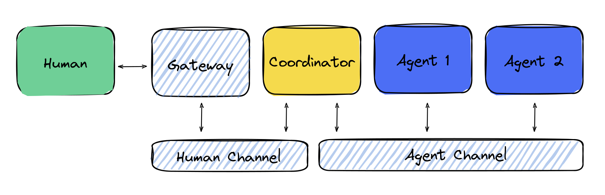

Advanced Use Case: Multi-Agent Communication with Human, WebSocket, and Agent Channels ü§ñüï∏Ô∏è
Welcome to the advanced example of the EggAI Multi-Agent Meta Framework! This demo showcases a rich workflow involving multiple communication channels, advanced coordination, and real-time message exchange.
The code for the example can be found here
Key Communication Channels
- WebSocket Gateway Channel: A specialized gateway that facilitates two-way communication between the human interface and the agent ecosystem through a WebSocket connection. Messages can flow from the human channel into the WebSocket and from the WebSocket back to the human channel.
- Human Channel: An interface for users (or frontends) to send and receive information related to complex workflows managed by agents.
- Agent Channel: Handles message passing and event-driven communications among multiple specialized agents.
Agents Involved
- WebsocketGateway Agent: Acts as a bridge. It takes messages originating from the human interface (e.g., a web UI) and translates them into messages for the agent ecosystem via the WebSocket connection. Conversely, it also relays agent-generated messages back to the human interface.
- Coordinator Agent: Orchestrates the end-to-end workflow. It routes incoming messages from the Human and WebSocket channels to the appropriate worker agents, and also ensures relevant responses or events are pushed back out to the human interface or WebSocket connection.
- Order Agent: Manages order lifecycle events, from request to creation and confirmation.
- Email Agent: Responsible for handling email-related tasks, such as sending notifications and confirmations.
What Makes This Setup Special?
- Real-Time Communication: By introducing the WebsocketGateway Agent, your application can support live, bidirectional communication between users and the agent framework.
- Scalable Coordination: The Coordinator Agent dynamically routes tasks and events, enabling seamless interaction between humans, web-based frontends, and backend agents.
- Event-Driven Workflow: Agents respond to specific events (e.g.,
order_requested,order_created) rather than following a rigid request-response pattern, allowing more flexible and extensible behavior. - Separation of Concerns: Each agent has a well-defined role, making it easier to extend or customize the workflow without entangling unrelated components.
Prerequisites üîß
Before you begin, ensure you have the following tools installed:
- Python 3.10+
- Docker and Docker Compose
Overview üîÑ
In this demo, you will:
- Send a request to create an order through the Human Channel or a WebSocket connection.
- The Coordinator Agent receives the request, delegates tasks to worker agents (Order Agent, Email Agent), and also leverages the WebsocketGateway Agent for real-time data flow.
- Receive notifications back through the Human Channel or the WebSocket, confirming that the operation was successfully processed.
Below is a conceptual architecture diagram for this example:

Key Features Highlighted
- ü§ù Human-Agent Interaction: The Human Channel and WebsocketGateway Agent bridge the gap between external interfaces and the internal agent ecosystem.
- üï∏Ô∏è WebSocket Integration: Live, continuous data exchange with frontends, enabling dynamic and interactive user experiences.
- üßë‚Äçü§ù‚Äçüßë Coordinator Role: A single point of decision-making that coordinates multiple agents and channels.
- üì¨ Worker Agents: Each agent focuses on a distinct domain (e.g., orders, emails), improving modularity and maintainability.
- ⚡ Event-Driven Design: Reactive updates and notifications ensure that each agent responds promptly to changes.
Setup Instructions ⏳
Step 1: Create a Virtual Environment (Optional but Recommended) üåç
To avoid dependency conflicts, create and activate a virtual environment:
python -m venv venv
source venv/bin/activate # For Windows: venv\Scripts\activate
Step 2: Install Dependencies üéì
Install the EggAI framework and additional libraries required for the HTTP and WebSocket interfaces:
pip install eggai fastapi uvicorn websockets
- EggAI: The multi-agent framework.
- FastAPI: A modern, high-performance web framework for exposing HTTP endpoints.
- Uvicorn: A lightning-fast ASGI server for running FastAPI apps.
- WebSockets: Enables real-time, bi-directional communication.
Step 3: Start Required Services with Docker üö¢
EggAI relies on brokers (e.g., Kafka or Redpanda) and other infrastructure services. Start these services using Docker Compose:
docker compose up -d
This will:
- Spin up the Redpanda broker.
- Start all necessary services required by the framework.
Running the Example üèÜ
The example code for this demo is located in the examples/02-websockety-gateway/main.py directory. To run the workflow:
python main.py
What Happens Under the Hood?
- Initiating a Request:
-
The
main.pyscript sends anorder_requestedevent (e.g., requesting aLaptopwith quantity1) to the Human Channel or via the WebsocketGateway Agent. -
Orchestration by the Coordinator:
- The Coordinator Agent intercepts this request and broadcasts it into the Agent Channel.
- The Order Agent receives the
order_requestedevent, processes the order, and emits anorder_createdevent. -
The Email Agent picks up the
order_createdevent and sends a notification email. It also emits anotificationevent back to the Coordinator. -
Bidirectional Communication:
- If using the WebSocket, the WebsocketGateway Agent ensures that any
notificationevents are streamed back to the frontend in real-time. -
Similarly, new requests arriving via the WebSocket are translated back into events in the Agent Channel, allowing continuous interaction.
-
Human-Readable Notification:
- After the workflow completes, the Coordinator sends a human-friendly message back through the Human Channel (or WebSocket), confirming that the order was created and an email notification was sent.
Updated Example Output üìù
When running this advanced demo, you may see output similar to the following:
Connection id: {"connection_id":"15b3a00b-41c0-467c-b411-8557dff2fab7"}
Message id: b6ad3608-2ce2-4c53-a123-45e9eec797cf
[ORDER AGENT]: order_requested event received. Emitting order_created event.
[EMAIL AGENT]: order_created event received. Sending email to customer.
[EMAIL AGENT]: order_created event received. Sending notification event.
[ORDER AGENT]: order_created event received.
Reply: {"id":"b6ad3608-2ce2-4c53-a123-45e9eec797cf","type":"notification","payload":{"message":"Order created, you will receive an email soon."}}
Agent is running. Press Ctrl+C to stop.
[WEBSOCKET GATEWAY]: WebSocket connection 15b3a00b-41c0-467c-b411-8557dff2fab7 closed.
This output shows how the entire workflow comes together:
- A connection_id is established, indicating a WebSocket connection.
- A request event (
order_requested) triggers the Order Agent and Email Agent. - Once the workflow completes, a notification message is emitted, confirming the successful order creation.
- The WebsocketGateway Agent logs when the connection closes, completing the lifecycle.
Stopping and Cleaning Up ❌
When you're done experimenting, stop and clean up the Docker containers:
docker compose down -v
This command halts all running containers and removes any associated volumes, restoring your system to its previous state.
Next Steps üöÄ
- Explore More Examples: Check out the
examples/folder for increasingly complex scenarios, including real-time dashboards, third-party API integrations, and more sophisticated agent networks. - Get Involved: Contribute to EggAI by following our contribution guidelines.
- Open Issues or Suggest Features: File an issue on GitHub if you encounter bugs or want to request new functionalities.
- Dive into the Documentation: Explore the official docs to understand all configuration options, architectural best practices, and performance tuning tips.
Thank you for choosing the EggAI Multi-Agent Meta Framework. Enjoy building responsive, scalable, and intelligent agent-driven systems! ü§ñü•ö